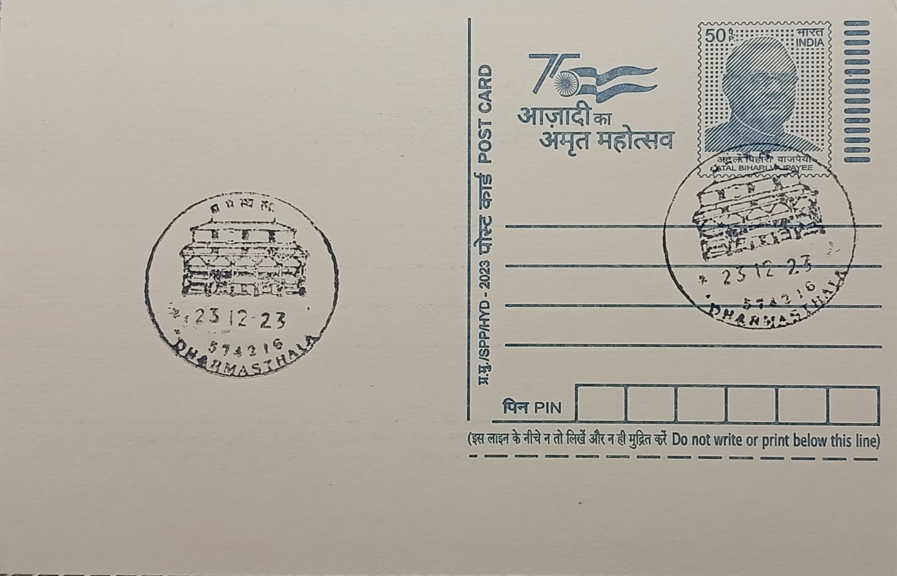

Sri Manjunatheswara Temple
ಶ್ರೀ ಮಂಜುನಾಥೇಶ್ವರ ದೇವಸ್ಥಾನ


The sanctuary at Dharmasthala traces its founding to a legend roughly eight centuries old, centred on a pious couple, Birmanna Pergade and his wife, residents of a house known as Nelliadi Beedu in a settlement then called Kuduma. According to local tradition, four guardian spirits of Dharma appeared to the couple and asked that their home be devoted to righteousness; the deities' vassal, Annappa Swamy, was subsequently dispatched to bring a Shiva linga from the Kadri Manjunatha temple near Mangalore, around which the new shrine was raised. The settlement's present name, meaning roughly "abode of dharma," is said to have been conferred in the sixteenth century by the Udupi saint Vadiraja Tirtha, replacing the earlier name Kuduma.
The temple is dedicated to Shiva worshipped as Manjunatha and ranks among coastal Karnataka's most visited Shaiva pilgrimage centres, distinguished less by scale than by the singular arrangement of its administration: its hereditary custodians, the Pergade-Heggade family, are practising Jains, while ritual worship inside is conducted by Madhwa Vaishnava priests, an arrangement without close parallel among major Hindu shrines in the region. This layered religious identity extends to the wider temple complex, which also houses shrines to Jain Tirthankaras and other local deities, making Dharmasthala a frequently cited case study in accounts of Hindu-Jain coexistence in coastal Karnataka, alongside its long-standing reputation for impartial social justice dispensed historically by the Heggade as Dharmadhikari.
Tradition holds that the original shrine was established under Birmanna Pergade around the twelfth century, with the temple as it stands today reflecting a Kerala-influenced architectural idiom uncommon elsewhere in the Tulu region, built on a square plan with a stepped, pyramidal roof. The structure combines granite and laterite in its base with wood and clay in its superstructure, and its sloping wooden roof is sheathed in gold-plated copper plating protecting the timber frame beneath, while carved wooden pillars support the open front pavilion where devotees gather. Successive generations of the Heggade family, the title itself a later form of "Pergade," have maintained and periodically renovated the shrine while expanding the surrounding institutional campus well beyond its original ritual footprint.
A distinguishing feature of present-day Dharmasthala is the Manjusha Museum within the complex, which displays temple chariots, sculpture, jewellery, and antiquities assembled over some three decades, including Mauryan-era terracotta coins and a centuries-old veena, alongside an adjoining collection of vintage automobiles gathered by the temple's administrator; together these turn the pilgrimage site into something closer to a cultural repository than a shrine alone. Equally notable is the scale of its daily dasoha, the free communal meal served without regard to the visitor's faith, caste, or means, a practice that has become as closely identified with Dharmasthala's public image as the temple rites themselves and that draws large numbers of pilgrims independent of the religious calendar.
Beyond ritual and museum activity, the Heggade family's charitable mandate has been formalised through dedicated organisations, most prominently the Shri Kshetra Dharmasthala Rural Development Project, launched in 1982 and extended across all eighty-one villages of the erstwhile Belthangady taluk, reaching tens of thousands of families through self-help groups and microfinance, alongside the SDM Educational Society's network of more than fifty schools, colleges, and professional institutes spanning medicine, engineering, and ayurveda. Administration of the temple and its affiliated trusts has continued under the long-serving Dharmadhikari Dr. D. Veerendra Heggade, under whom the shrine has grown into a combined centre of worship, philanthropy, and higher education that draws both pilgrims seeking darshan and visitors engaging directly with its rural-development and academic programmes.
| Date of Introduction | January 2, 1989 |
|---|---|
| Address | Sub Postmaster, |
| Dharmasthala SO, | |
| Dakshina Kannada (dt.), Karnataka - 574216. |